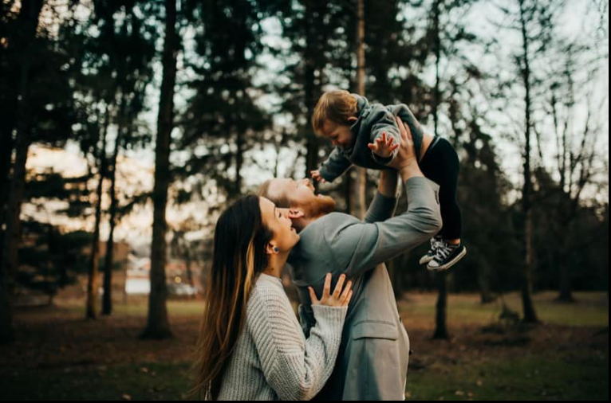
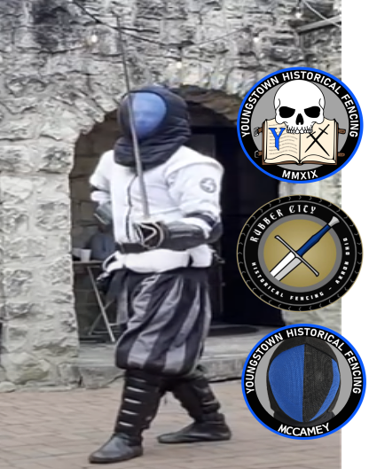
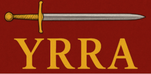
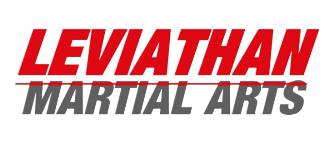
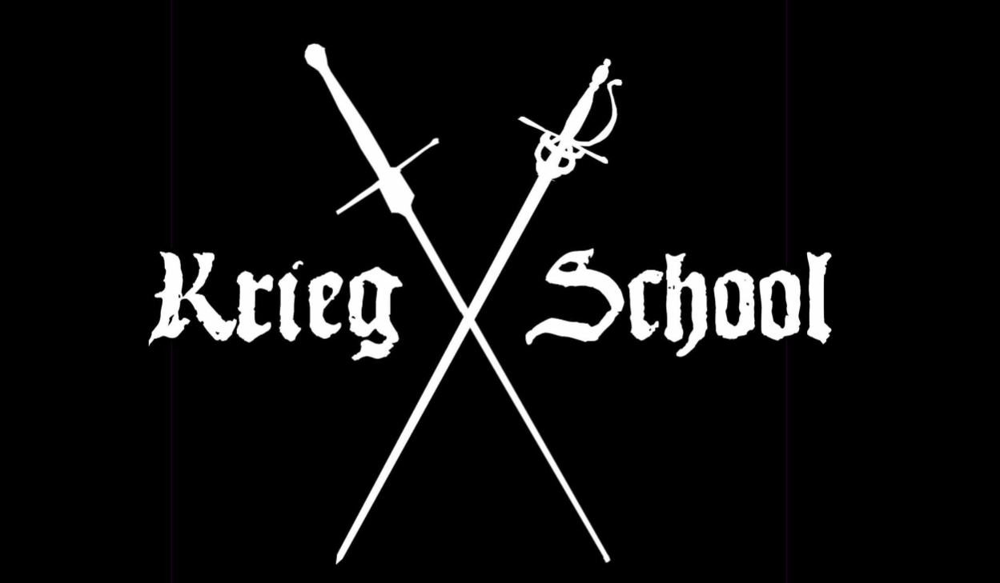
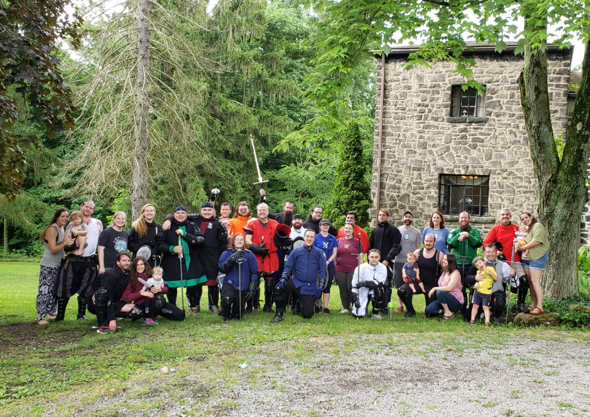
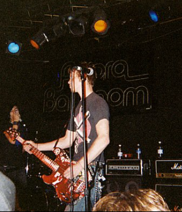
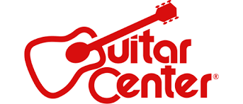
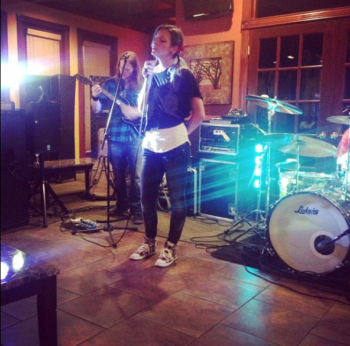
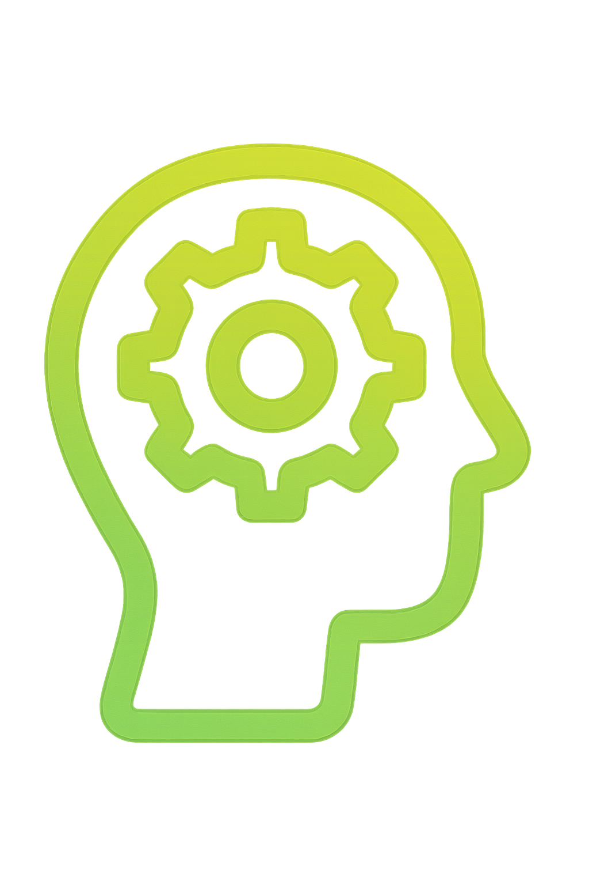

Kyle Mohney
Kyle Mohney
Kyle Mohney
Kyle Mohney
Born and raised in the small town of Columbiana, Ohio, Kyle Mohney carries with him the values of hard work, integrity, and community that defined his upbringing in a close-knit, middle-class family. These early lessons became the compass by which he navigates life — as a devoted husband, proud father, and dedicated professional.
At the heart of everything Kyle does is his family — his remarkable wife, their curious and spirited 4-year-old son, and their bright, joyful 1-year-old daughter. They are his greatest pride, truest inspiration, and the reason he strives for excellence in every endeavor.

Kyle's most recent chapter was at Thumbtack, where he found not just a job, but a mission. He thrived in building systems that empowered teams, improved processes, and created clarity for customers. He loved the work, cherished the people, and took pride in the impact made together. The closure of his department was not a reflection of their success, but a change in company direction — an ending beyond his control, yet one that leaves him deeply proud of all they accomplished.
Origins in Denver:
Kyle Mohney’s journey in historical fencing began in the scolding hot summers of Denver, Colorado, during the Covid lockdown—when the world stood still and there was nothing else to do. He picked up a sword, a historical manual, and started studying.
Leviathan Martial Arts:
An endeavor born of curiosity and self-reliance. With no formal instructor, Kyle turned to the wisdom of books, manuscripts, and the shared determination of a handful of fellow fencers, each new to the art and driven by a hunger to learn. Together, they forged their skills in the crucible of self-teaching, guided only by the written word and the spirit of discovery.
Krieg School:
As their passion grew, so did their need for refinement. The group joined the Krieg School, where the lessons of solitary study met the practical education of seasoned instructors. Under expert guidance, their techniques sharpened, their understanding deepened, and camaraderie flourished. The Krieg School became more than a place of learning—it was a proving ground, where self-taught ambition was honed into disciplined skill.
Youngstown Historical Fencing:
When Kyle moved to Ohio, a new chapter began. He joined Youngstown Historical Fencing, stepping into a community defined by excellence and tradition. Here, his journey reached new heights: Kyle became a first-place tournament winner, an instructor, and a coach. In the classroom and on the tournament floor, he found his calling—not only to compete, but to teach, to mentor, and to inspire the next generation of fencers. The lessons of Leviathan and Krieg shaped his foundation; Youngstown allowed him to build upon it, transforming personal achievement into shared success.
Growth & Community:
This story is not merely one of medals or matches—though Kyle has fought in more than 1,500, each a test of discipline and resolve. It is a story of growth, of community, and of the relentless pursuit of mastery. From the solitude of self-study to the fellowship of teams, Kyle has learned that greatness is forged not alone, but together.
Sharing the Journey:
For the past five years and counting, Kyle has also run the McCamey HEMA YouTube channel, where he has shared hundreds ofvideos documenting his fights, training, and tournament experiences for the world to see.





In the heartland of Columbiana, Ohio, a young Kyle Mohney first discovered the transformative power of music. In junior high, he picked up a bass guitar and, with a handful of friends, formed a garage band that would go on to headline the local fair—an early testament to his ability to inspire and unite those around him.
As he entered high school, Kyle’s musical ambitions grew. He transitioned to guitar and co-founded Violent Offense, a hardcore band that toured the eastern United States and earned a place on the Ohio’s Best compilation in 2006. His leadership and creative vision propelled the group to regional acclaim.
After graduation, Kyle reunited with his original bandmates to form Silent Impulse, a hard rock-metal ensemble featured on FuzeTV’s Slave To Metal show in 2008. Each performance was marked by discipline, energy, and a relentless pursuit of excellence.
Kyle’s journey next led him to the Academy of Art University, and soon after, to Nashville, Tennessee, where he joined Meant To Bleed—a band blending rock and pop influences. Living with his bandmates, he collaborated with industry leaders such as 3 Doors Down and River-Gate Studios, and performed on Nashville radio. These years were defined by artistic growth and the forging of lifelong connections.
Following this chapter, Kyle took a brief respite from the stage, working at Guitar Center and deepening his understanding of music’s technical foundations. He returned to his roots, embracing acoustic music and sharing his talents in more intimate settings.
It was during this period that Kyle met his future wife, a gifted musician in her own right. Together, they performed acoustic shows across Ohio and Colorado, their partnership a harmonious blend of talent and devotion. As their family grew, music became a cherished part of home life—songs now played for their children, with the next generation already showing promise at the piano. Through every stage, Kyle’s musical legacy has been one of connection, creativity, and enduring love.




FUTURE VISION & PURPOSEIn recent years, Kyle has embraced a new passion: harnessing the potential of artificial intelligence to expand what is possible in creative and operational work. From building immersive, JavaScript-driven video games with responsive AI-driven characters, to designing intelligent knowledge systems that adapt in real time, to crafting dynamic, AI-assisted content strategies — his work at the intersection of technology and creativity has been among the most rewarding of his career.
These projects are more than technical exercises; they represent explorations of how human ingenuity and machine intelligence can work in concert to build experiences that are richer, more personal, and more impactful than ever before.
Whether in the office, the classroom, the studio, the sport-club, or the code editor, Kyle is guided by a singular belief: that excellence is not an act, but a habit — forged through dedication, sharpened by curiosity, and sustained by a commitment to those he serves. His story is still being written, and each chapter is approached with the same determination that has carried him from small-town beginnings to the forefront of AI-powered innovation.
At Thumbtack, I was responsible for escalations and documentation. When unresolved negative reviews threatened platform compliance, leadership turned to me—despite no existing system for this challenge.
I partnered with legal to draft a library of approved response templates, then onboarded Thumbtack to Sprout Social and built a custom tagging and sorting system to auto-filter reviews and generate accurate sentiment reports.
By matching templates to each review and responding to over 2,000 cases, I cleared the backlog, reversed the negative trend, and left behind a scalable framework for ongoing success.
I created an in-depth training module to help our support advocates guide customers in understanding and measuring their return on investment with our product. This initiative led to a dramatic increase in customer satisfaction and contributed directly to higher sales.
I treat AI as a force multiplier — a way to amplify human judgment and creativity. My goal isn't to replace people, but to give them sharper tools and faster feedback so they can focus on high-value work.
I split my time between hands-on technical projects and disciplines that sharpen focus and timing, like Historical European Martial Arts. On the tech side, I build AI-powered tools, programs, and experiment with workflow automation. On the physical side, I train with sword and grappling to keep my mind sharp and adaptive.
I'm a lifelong learner who thrives at the intersection of creativity and technology. Whether I'm building AI-powered games, coaching historical fencing, or composing music with my family, I seek out challenges that blend tradition with innovation—and I bring that same energy to every professional project.